k8s_raupi2_3_samples: 6date: 2022-06-22 15:05:59.384708 | max: 410 min: 268 mean: 344 |
max: 4178 min: 3672 mean: 3947 |
max: 67.52 min: 65.43 mean: 66.68 |
max: 219 min: 23 mean: 102 | ||
| 1. test id: 2022.05.28_08-55_k8s_raupi2_3_d071 [raw data] | run settings: cpu=70 pods=3 treads=25 sc_min=14 warmup=90 | Duration s | qps | CPU % | Err | |
| 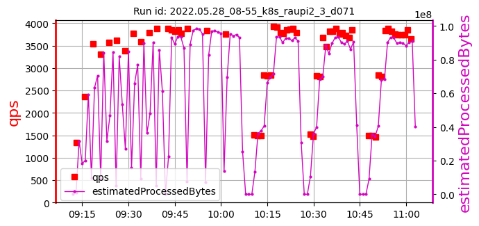 | 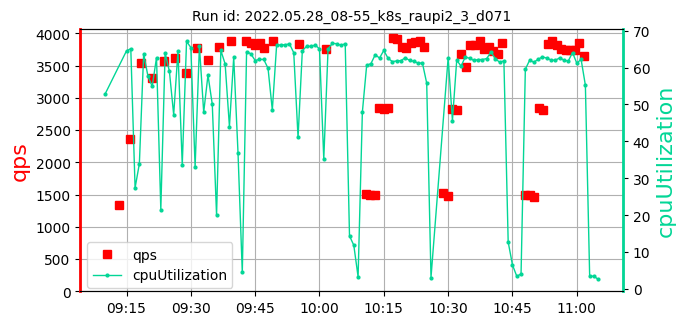 | 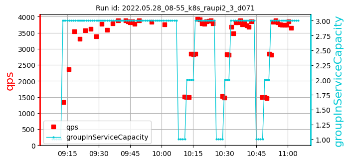 | [366, 268, 362] 332 | [3883, 3834, 3749] 3822 | [66.26, 65.87, 66.35] 66.16 | 83 |
| 2. test id: 2022.05.28_21-14_k8s_raupi2_3_d071 [raw data] | run settings: cpu=70 pods=3 treads=25 sc_min=14 warmup=90 | Duration s | qps | CPU % | Err | |
| 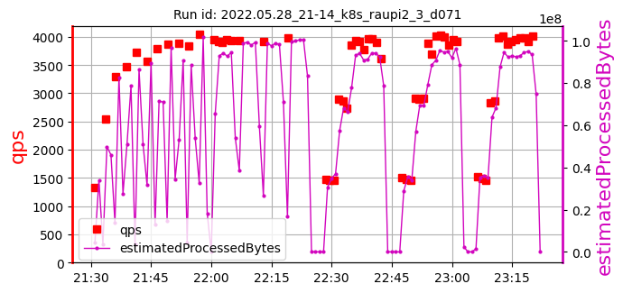 | 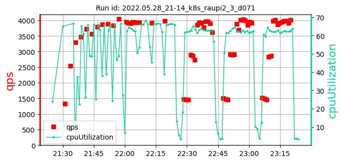 | 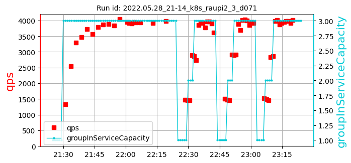 | [366, 334, 319] 340 | [3933, 3914, 3988] 3945 | [66.77, 66.46, 66.26] 66.50 | 43 |
| 3. test id: 2022.05.28_23-33_k8s_raupi2_3_d071 [raw data] | run settings: cpu=70 pods=3 treads=25 sc_min=14 warmup=90 | Duration s | qps | CPU % | Err | |
| 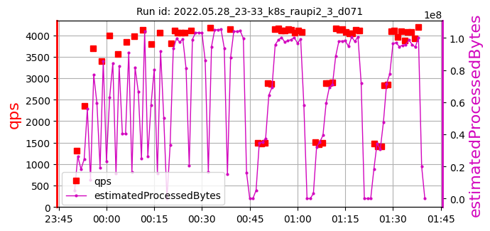 | 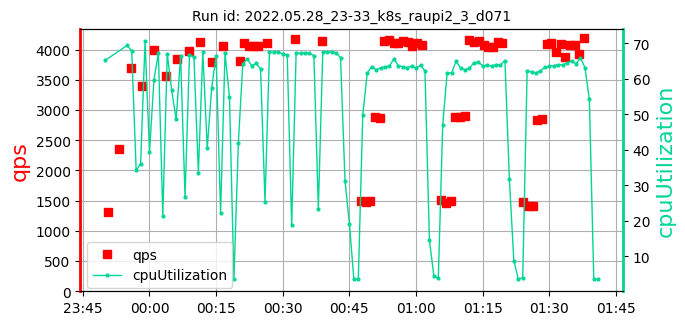 | 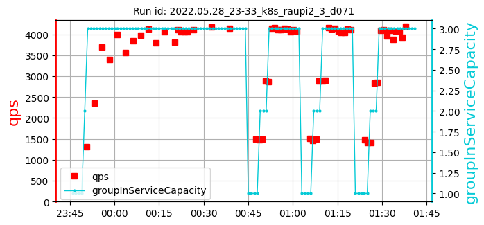 | [335, 361, 305] 334 | [4111, 4178, 4136] 4142 | [67.38, 67.32, 67.52] 67.41 | 197 |
| 4. test id: 2022.05.29_02-08_k8s_raupi2_3_d071 [raw data] | run settings: cpu=70 pods=3 treads=25 sc_min=14 warmup=90 | Duration s | qps | CPU % | Err | |
| 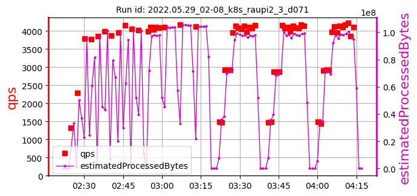 | 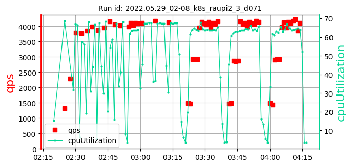 | 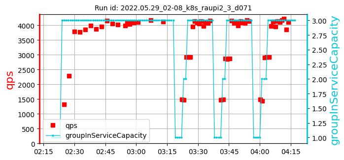 | [326, 300, 330] 319 | [4101, 4165, 4127] 4131 | [67.49, 67.42, 67.45] 67.45 | 44 |
| 5. test id: 2022.05.29_04-26_k8s_raupi2_3_d071 [raw data] | run settings: cpu=70 pods=3 treads=25 sc_min=14 warmup=90 | Duration s | qps | CPU % | Err | |
| 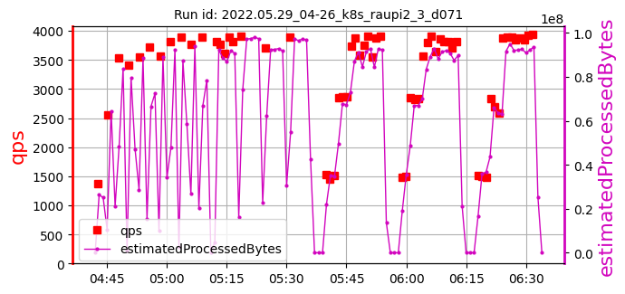 | 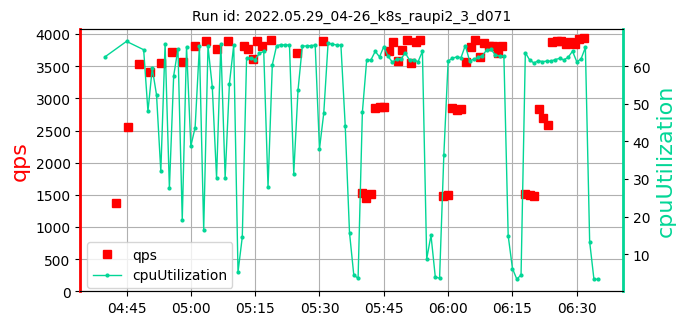 | 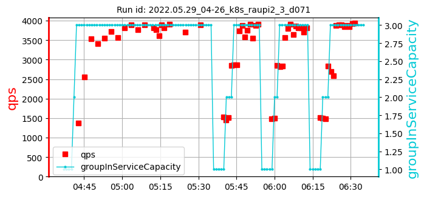 | [407, 316, 347] 357 | [3901, 3708, 3890] 3833 | [65.63, 65.43, 65.89] 65.65 | 23 |
| 6. test id: 2022.05.29_06-48_k8s_raupi2_3_d071 [raw data] | run settings: cpu=70 pods=3 treads=25 sc_min=14 warmup=90 | Duration s | qps | CPU % | Err | |
| 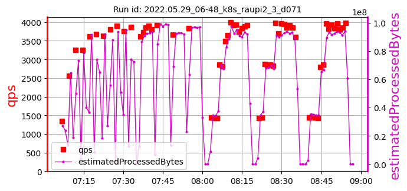 | 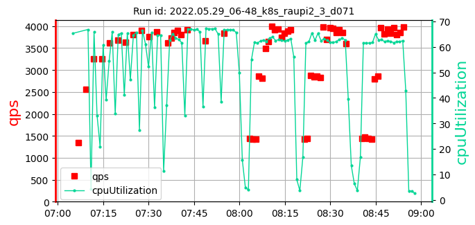 | 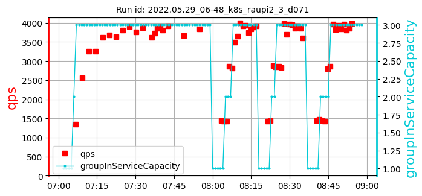 | [355, 380, 410] 382 | [3915, 3672, 3844] 3810 | [66.87, 67.13, 66.79] 66.93 | 219 |
k8s_raupi2_3_samples: 6date: 2022-06-22 15:05:59.384708 | max: 410 min: 268 mean: 344 |
max: 4178 min: 3672 mean: 3947 |
max: 67.52 min: 65.43 mean: 66.68 |
max: 219 min: 23 mean: 102 |